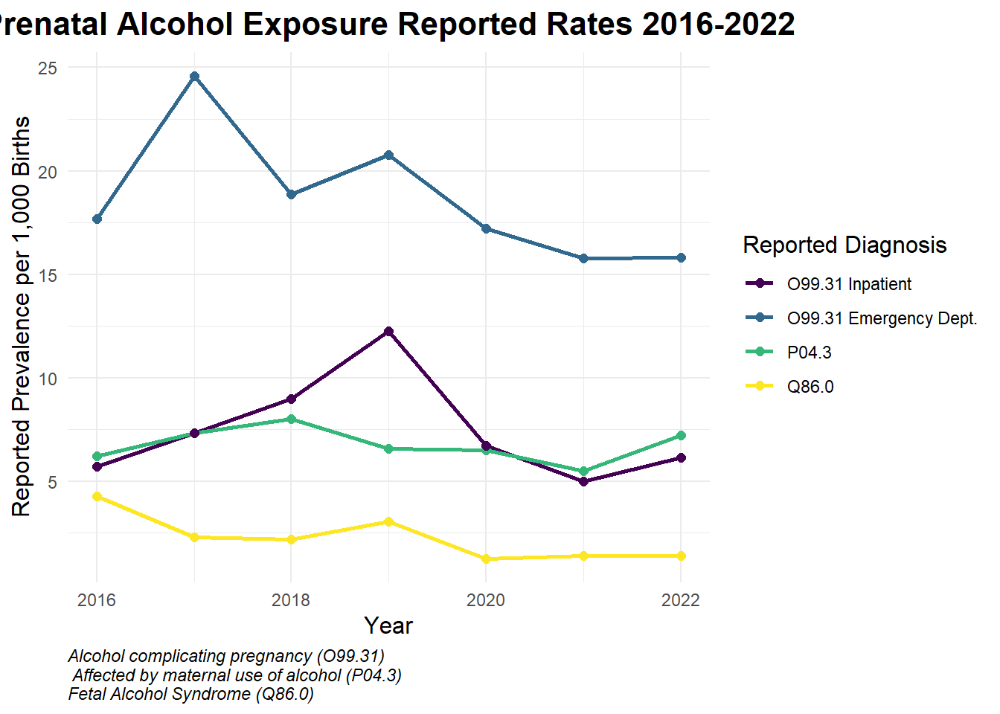
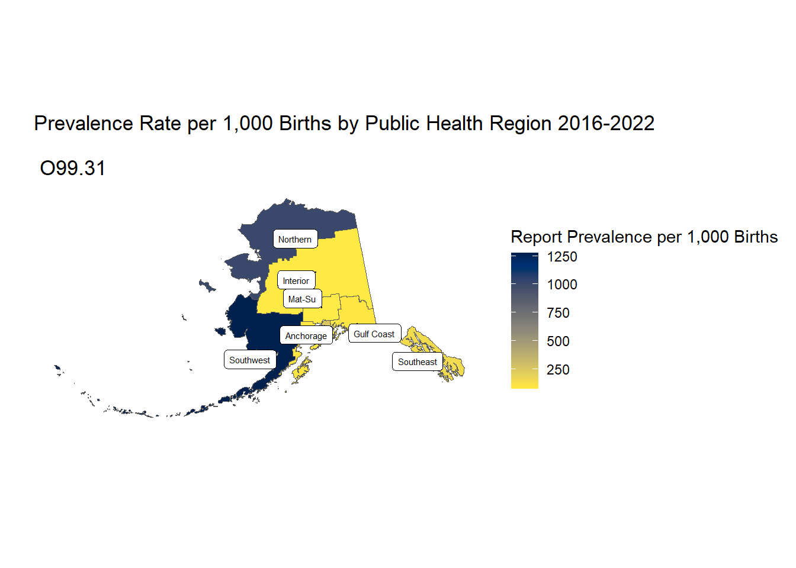
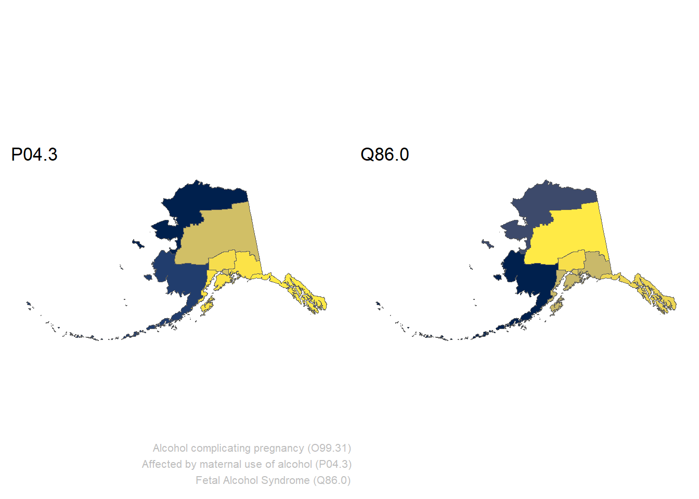

Background
Fetal alcohol syndrome (FAS) is the most severe form of fetal alcohol spectrum disorder (FASD), a group of conditions that occur in children whose mothers consumed alcohol during pregnancy. Fetal alcohol syndrome leads to a range of lifelong physical, behavioral, and cognitive impairments. The syndrome is characterized by distinctive facial features (such as small eyes, a thin upper lip, and a smooth philtrum), growth deficiencies, and central nervous system abnormalities. These issues can manifest as intellectual disabilities, learning and memory problems, poor coordination, and behavioral difficulties.1,2,3
The sole cause of FAS is the consumption of alcohol by a pregnant person. Alcohol passes through the placenta and can interfere with the normal development of the fetus, particularly affecting the brain and other organs. There is no known safe amount or type of alcohol to consume during pregnancy; even small amounts can be harmful. The risk is present throughout pregnancy, including the earliest stages when a person may not yet realize they are pregnant.2,3,4 Diagnosis of FAS is based on the presence of characteristic physical features, growth deficits, neurodevelopmental problems, and a history of prenatal alcohol exposure. No laboratory test exists for FAS, so healthcare providers rely on clinical assessment and developmental history to make the diagnosis.1,5,6
Fetal alcohol syndrome is a lifelong condition with no cure, but early intervention and supportive treatments can improve outcomes. Treatment options include behavioral and educational therapies, medical care for associated health problems, medications for specific symptoms, and parent training to help families manage behavioral and learning challenges. Supportive environments, early diagnosis (ideally before age six), and access to special education and social services can help mitigate the impact of FAS.1,2,6 Prevention is straightforward: avoiding alcohol entirely during pregnancy or when planning to become pregnant is the only way to prevent fetal alcohol syndrome.2,3,6
Public Health Surveillance of FAS
Surveillance of fetal alcohol syndrome (FAS) has many inherent challenges due to the delayed manifestation of its clinical features and reliance on subjective diagnostic criteria. Many physical and neurodevelopmental characteristics of FAS, such as cognitive impairments or behavioral issues, may not become apparent until a child reaches school age, complicating early identification.7,8 Diagnosis requires clinical observation of specific facial anomalies, growth deficiencies, and central nervous system abnormalities. However, these signs can be subtle, vary across ethnic groups, or change as a child develops.7,9 Additionally, maternal alcohol consumption during pregnancy is often under-reported or undocumented in medical records, further hindering confirmation of prenatal exposure.9
Another major obstacle is integrating data from multiple sources, including medical, educational, and social service records, to capture FAS cases fully. Surveillance systems often lack access to non-medical records (e.g., school evaluations), limiting their ability to identify neurodevelopmental issues that emerge outside clinical settings.9 Variability in diagnostic practices among healthcare providers and the absence of standardized biomarkers for FAS also contribute to underreporting or misclassification.7,8 Furthermore, tracking cases across different healthcare systems or geographic regions poses logistical challenges, particularly when children move or change providers before establishing a definitive diagnosis.9 These complexities result in underestimated prevalence rates and hinder efforts to monitor FAS’s true public health impact.
The many challenges of FAS surveillance have led the Alaska Birth Defect Registry to take a multi-prong approach that leverages multiple data sources to obtain an estimate of other (upstream) outcomes of prenatal alcohol exposure. To achieve this, the registry performs parallel surveillance on three medical diagnosis codes that capture different adverse health outcomes caused by maternal alcohol use during pregnancy. The ABDR utilizes data from the state’s Health Facilities Data Reporting (HFDR) Program, the state’s Health Analytics and Vital Records - Birth Certificate, and ABDR’s own data collection to create this report.
Prenatal Alcohol Exposure Diagnosis Codes ICD-10-CM Diagnosis Code O99.31 - The ICD-10 code “O99.31” refers to a medical event where alcohol use results in a complication during pregnancy, childbirth, or puerperium (about six weeks after childbirth, during which the mother’s reproductive organs return to their original nonpregnant condition) ICD-10-CM Diagnosis Code P04.3 - The ICD-10 code “P04.3” refers to a newborn affected by maternal use of alcohol, meaning a baby showing signs of complications due to the mother’s alcohol consumption during pregnancy, essentially indicating “Fetal Alcohol Syndrome” related issues in the newborn. ICD-10-CM Diagnosis Code Q86.0 - The ICD-10 code “Q86.0” refers to “Fetal alcohol syndrome (dysmorphic) Surveillance of ICD-10 codes”O99.31” and “P04.3” are likely more sensitive than the threshold for FAS. Additionally, for ICD-10 codes “O99.31” and “P04.3,” the diagnostic complexity is much lower, requiring less clinical expertise and assessment for an accurate diagnosis. Lastly, “O99.31” and “P04.3” do not require follow-up to assess symptoms that develop later.
Surveying primary prevention targets of FAS is like checking for lead paint in homes versus diagnosing lead poisoning in children: it is more straightforward to test homes built before a certain year for the presence of lead-based paint than diagnosing lead poisoning in children, which requires blood tests, developmental assessments, and can manifest with a wide range of non-specific symptoms.
Limitations
Tracking more immediate targets of alcohol consumption during pregnancy, like “O99.31” and “P04.3,” can be done more accurately than FAS for the reasons outlined previously. The surveillance of these targets offers valuable insights into the public health needs for primary prevention efforts. However, there are inherent limitations compared to tracking actual Fetal Alcohol Syndrome (FAS) diagnoses. Tracking “O99.31” and “P04.3” does not help quantify the true burden of FAS and the broader Fetal Alcohol Spectrum Disorders (FASD) in Alaska and does not necessarily assist in planning and delivery of intervention services for patients with FAS. Consequently, relying solely on primary prevention surveillance paints an incomplete picture of the overall public health challenge posed by FAS, limiting the ability to understand the full scope of needs and effectively allocate resources for those living with the condition.
Summary
By performing the surveillance of upstream outcomes of prenatal alcohol exposure along with FAS, the registry hopes to bolster stakeholder confidence in the data. The registry aims to obtain a clear and accurate understanding of prenatal alcohol exposure in Alaska that stakeholders can utilize to inform mitigation efforts and track the progress and effectiveness of programs and interventions focused on primary Prevention.
Prenatal Alcohol Exposure Diagnosis Codes
- ICD-10-CM Diagnosis Code O99.31 - The ICD-10 code “O99.31” refers to a medical event where alcohol use results in a complication during pregnancy, childbirth, or puerperium (the period of about six weeks after childbirth during which the mother’s reproductive organs return to their original nonpregnant condition)
- ICD-10-CM Diagnosis Code P04.3 - The ICD-10 code “P04.3” refers to a newborn affected by maternal use of alcohol, meaning a baby showing signs of complications due to the mother’s alcohol consumption during pregnancy; essentially indicating “Fetal Alcohol Syndrome” related issues in the newborn.
- ICD-10-CM Diagnosis Code Q86.0 - The ICD-10 code “Q86.0” refers to “Fetal alcohol syndrome (dysmorphic). ::: {.cell}
:::
Regional Distribution
Distribution of prenatal alcohol exposure in Alaska by Public Health Region of maternal residence at the time of birth. A description of regional breakdowns can be found here. Data suppressed for # of reports < 6.


Alcohol complicating pregnancy (O99.31) by Public Health Region 2016-2022
Newborn Affected by Maternal Use of Alcohol (P04.3) by Public Health Region 2016-2022
Fetal Alcohol Syndrome (Dysmorphic - Q86.0) by Public Health Region 2016-2022
Demographics
Health Facilities Data Reporting (HFDR) Alcohol complicating pregnancy (O99.31) diagnoses 2016-2022 by Race
| Race | Reports | Births | Prevalence (95% CI) |
|---|---|---|---|
| Alaska Native/Am Indian | 1779 | 17112 | 103.96 (99.19, 108.91) |
| White | 145 | 47005 | 3.08 (2.6, 3.63) |
| Unknown | 96 | 1185 | 81.01 (65.62, 98.93) |
| Other | 38 | 2480 | 15.32 (10.84, 21.03) |
| Black | 16 | 3382 | 4.73 (2.7, 7.68) |
| Pacific Islander | 13 | 3182 | 4.09 (2.18, 6.99) |
| Asian | - | 4842 | 0.41 (0.05, 1.49) |
Newborn Affected by Maternal Use of Alcohol (P04.3) 2016-2022
| Reports | Births | Prevalence (95% CI) | |
|---|---|---|---|
| Sex | |||
| Female | 219 | 33943 | 6.4 (5.6, 7.4) |
| Male | 221 | 35913 | 6.2 (5.4, 7.0) |
| Birth weight (grams) | |||
| <2500 | 98 | 4454 | 22.0 (17.9, 26.8) |
| 2500+ | 340 | 65334 | 5.2 (4.7, 5.8) |
| Maternal age | |||
| 12-19 | 23 | 3034 | 7.6 (4.8, 11.4) |
| 20-24 | 82 | 14884 | 5.5 (4.4, 6.8) |
| 25-29 | 142 | 21499 | 6.6 (5.6, 7.8) |
| 30-34 | 115 | 19038 | 6.0 (5.0, 7.2) |
| 35-39 | 68 | 9386 | 7.2 (5.6, 9.2) |
| 40+ | 10 | 2011 | 5.0 (2.4, 9.1) |
| Maternal race | |||
| Alaska Native/American Indian | 325 | 15299 | 21.2 (19.0, 23.7) |
| Asian/Pacific Islander | - | 6594 | - |
| Black | - | 3114 | - |
| White | 87 | 41901 | 2.1 (1.7, 2.6) |
| Maternal education (years) | |||
| <12 years | 160 | 6342 | 25.2 (21.5, 29.4) |
| 12 years | 194 | 21375 | 9.1 (7.8, 10.4) |
| +12 years | 69 | 41024 | 1.7 (1.3, 2.1) |
| Marital status | |||
| Married | 73 | 44517 | 1.6 (1.3, 2.1) |
| Unmarried | 343 | 24824 | 13.8 (12.4, 15.4) |
| Maternal smoking use | |||
| Reported smoking | 243 | 7556 | 32.2 (28.2, 36.5) |
| Reported not smoking | 181 | 61691 | 2.9 (2.5, 3.4) |
| Medicaid (mother or child) | |||
| Medicaid | 375 | 34036 | 11.0 (9.9, 12.2) |
| Non-Medicaid | 65 | 35820 | 1.8 (1.4, 2.3) |
| Father on birth certificate | |||
| Not Present | 143 | 4878 | 29.3 (24.7, 34.5) |
| Present | 297 | 64978 | 4.6 (4.1, 5.1) |
| Notes: Prevalence reported per 1,000 live births; Data suppressed for # of reports < 6; 95% CI = 95% Confidence Interval | |||
Fetal Alcohol Syndrome (Dysmorphic - Q86.0) 2016-2022
| Reports | Births | Prevalence (95% CI) | |
|---|---|---|---|
| Sex | |||
| Female | 55 | 33943 | 1.6 (1.2, 2.1) |
| Male | 62 | 35913 | 1.7 (1.3, 2.2) |
| Birth weight (grams) | |||
| <2500 | 50 | 4454 | 11.2 (8.3, 14.8) |
| 2500+ | 67 | 65334 | 1.0 (0.8, 1.3) |
| Maternal age | |||
| 12-19 | - | 3034 | - |
| 20-24 | 21 | 14884 | 1.4 (0.9, 2.2) |
| 25-29 | 36 | 21499 | 1.7 (1.2, 2.3) |
| 30-34 | 37 | 19038 | 1.9 (1.4, 2.7) |
| 35-39 | 17 | 9386 | 1.8 (1.1, 2.9) |
| 40+ | - | 2011 | - |
| Maternal race | |||
| Alaska Native/American Indian | 91 | 15299 | 6.0 (4.8, 7.3) |
| Asian/Pacific Islander | - | 6594 | - |
| Black | - | 3114 | - |
| White | 18 | 41901 | 0.4 (0.2, 0.7) |
| Maternal education (years) | |||
| <12 years | 48 | 6342 | 7.6 (5.6, 10.0) |
| 12 years | 48 | 21375 | 2.2 (1.7, 3.0) |
| +12 years | 13 | 41024 | 0.3 (0.2, 0.5) |
| Marital status | |||
| Married | 19 | 44517 | 0.4 (0.3, 0.7) |
| Unmarried | 90 | 24824 | 3.6 (2.9, 4.5) |
| Maternal smoking use | |||
| Reported smoking | 59 | 7556 | 7.8 (5.9, 10.1) |
| Reported not smoking | 54 | 61691 | 0.9 (0.7, 1.1) |
| Medicaid (mother or child) | |||
| Medicaid | 98 | 34036 | 2.9 (2.3, 3.5) |
| Non-Medicaid | 19 | 35820 | 0.5 (0.3, 0.8) |
| Father on birth certificate | |||
| Not Present | 35 | 4878 | 7.2 (5.0, 10.0) |
| Present | 82 | 64978 | 1.3 (1.0, 1.6) |
| Notes: Prevalence reported per 1,000 live births; Data suppressed for # of reports < 6; 95% CI = 95% Confidence Interval | |||
P-value Estimate
To evaluate the trend over time and account for under/over-dispersion we constructed a quasi-Poisson regression model. This model assumes the variance is a linear function of the mean and models the estimated number of annual defects by year with a natural log (ln) offset of the annual births. P-values < 0.05 are considered significant, which indicates that the predicted slope is significantly different from a slope of zero.
Data Suppression
For region and demographic data tables, values are suppressed based on the number of reports received during the observation period. Counts less than 6 are suppressed (as indicated by ‘-’ in the table). For regions or demographics with only one cell count suppressed a second is suppressed to eliminate the ability to back-calculate the estimate.
References
[1] WedbMD - Fetal Alcohol Syndrome: Signs and Symptoms, Available from: https://www.webmd.com/baby/fetal-alcohol-syndrome Retrieved 16 April 2025
[2] Cleveland Clinic: Fetal Alcohol Syndrome Available from: https://my.clevelandclinic.org/health/diseases/15677-fetal-alcohol-syndrome Retrieved 16 April 2025
[3] Mayo Clinic: Fetal alcohol syndrome - Symptoms & causes Available from: https://www.mayoclinic.org/diseases-conditions/fetal-alcohol-syndrome/symptoms-causes/syc-20352901 Retrieved 16 April 2025
[4] The American Academy of Child and Adolescent Psychiatry - Fetal Alcohol Syndrome (FAS) No. 134; October 2023 Available from: https://www.aacap.org/AACAP/Families_and_Youth/Facts_for_Families/FFF-Guide/Fetal_Alcohol_Syndrome-134.aspx Retrieved 16 April 2025
[5] Mayo Clinic: Fetal alcohol syndrome - Diagnosis & Treatment Available from: https://www.mayoclinic.org/diseases-conditions/fetal-alcohol-syndrome/diagnosis-treatment/drc-20352907 Retrieved 16 April 2025
[6] National Library of Medicine MedlinePlus - Fetal Alcohol Spectrum Disorders Available from: https://medlineplus.gov/fetalalcoholspectrumdisorders.html Retrieved 16 April 2025
[7] Moberg DP, Bowser J, Burd L, Elliott AJ, Punyko J, Wilton G; Fetal Alcohol Syndrome Surveillance Program-FASSLink Team. Fetal alcohol syndrome surveillance: age of syndrome manifestation in case ascertainment. Birth Defects Res A Clin Mol Teratol. 2014 Sep;100(9):663-9. doi: 10.1002/bdra.23245. Epub 2014 Apr 16. PMID: 24737611; PMCID: PMC4169739. Available from: https://onlinelibrary.wiley.com/doi/10.1002/bdra.23245 First published: 16 April 2014
[8] Centers for Disease Control and Prevention - Surveillance for Fetal Alcohol Syndrome Using Multiple Sources – Atlanta, Georgia, 1981-1989 MMWR November 28, 1997 / 46(47);1118-1120 Available from: https://beta.cdc.gov/mmwr/preview/mmwrhtml/00050021.htm Retrieved 16 April 2025
[9] O’Leary LA, Ortiz L, Montgomery A, Fox DJ, Cunniff C, Ruttenber M, Breen A, Pettygrove S, Klumb D, Druschel C, Frías JL, Robinson LK, Bertrand J, Ferrara K, Kelly M, Gilboa SM, Meaney FJ; FASSNetII. Methods for surveillance of fetal alcohol syndrome: The Fetal Alcohol Syndrome Surveillance Network II (FASSNetII) - Arizona, Colorado, New York, 2009 - 2014. Birth Defects Res A Clin Mol Teratol. 2015 Mar;103(3):196-202. doi: 10.1002/bdra.23335. Epub 2015 Mar 12. PMID: 25761572; PMCID: PMC4484746. Available from: https://onlinelibrary.wiley.com/doi/10.1002/bdra.23335 First published: 12 March 2015
Resources
Suggested Citation
State of Alaska Department of Health, Division of Public Health, Section of Women’s, Children’s, and Family Health. Alaska Birth Defects Registry Condition Report: Prenatal Alcohol Exposure Report, Alaska, 2007-2022. Updated August 25, 2025. Available at: http://rpubs.com/AK_ABDR/prenatal_alcohol_report.
Contact
Alaska Birth Defects Registry (ABDR)
3601 C Street, Suite 358
Anchorage, AK 99503
(907) 269-3400 phone
(907) 754-3529 fax
hssbirthdefreg@alaska.gov
Updated: August 25, 2025
Code source: R:\ABDR\Website\ABDR_Quarto_Website\prenatal_alcohol_report.qmd